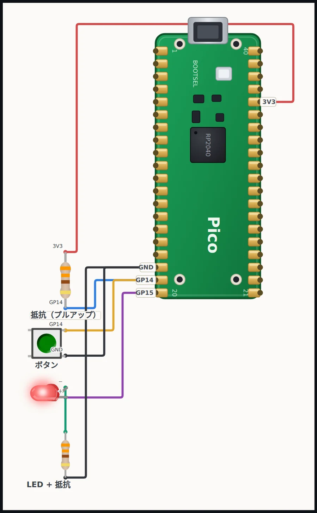
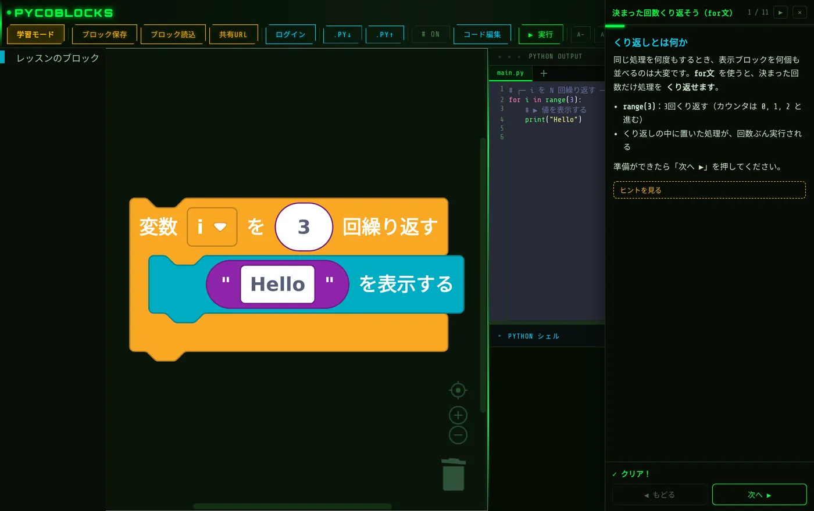

目的に合わせて選べる 3 つのモード
実機がなくても始められます。ブロックを組むと、そのまま動く Python のコードができます。
ブラウザで動く Python
Skulpt という仕組みで、実機がなくてもブラウザの中だけで実行できます。ループ・リスト・辞書・関数・クラス・f文字列まで、Python の基本文法をひととおり扱えます。
pygame でゲームづくり
pygame 互換のエミュレーターを積んでいます。ブラウザの中でゲームが動き、書き出したコードはパソコンの Python + pygame でもそのまま動きます。
Pico に直接つなぐ
Web Serial API を使って、Raspberry Pi Pico や PoliviaBot にブラウザから直接つなぎます。プログラムの実行と main.py の書き込みができます。
μPython モードを開く →
PycoBlocks の特長
ブロックを組む間もずっと本物の Python が見えるように作りました。
コードが常に見える
組んだブロックの隣に、自動生成された Python / MicroPython がいつも表示されます。ブロックとコードを見比べるうちに、テキストのプログラミングへ移りやすくなります。
エラーを日本語で解説
実行時のエラーは、画面下のバナーに日本語で表示します。何が起きたのか読めるので、ひとりで学んでいてもつまずいたまま止まりません。
作品を URL で共有
作ったプログラムは URL にして渡せます。先生から生徒へ、友だち同士で、リンクを開くだけで同じ作品が立ち上がります。
実機にそのまま書き込み
Raspberry Pi Pico や PoliviaBot にブラウザから直接つないで、その場で実行したり main.py を書き込んだりできます。画面で試したプログラムを、そのまま実機で動かせます。
スマホ・タブレット対応
画面の幅に合わせて表示が変わるので、タブレットやスマホでもブロックを組めます。1人1台端末の授業でもそのまま使えます。
無料・登録不要・MIT
登録もインストールもいらず、費用もかかりません。ソースコードは MIT ライセンスで公開しているので、授業でも自由に使えます。
使い方は 3 ステップ
面倒な環境構築はなしで、ブラウザだけで組み立てから実行まで進められます。
ブラウザで開く
「今すぐはじめる」を押すと、そのまま編集画面が開きます。準備はこれだけです。
ブロックを並べる
左のカテゴリからブロックをドラッグして組み立てます。並べたそばから、隣に Python / MicroPython のコードができていきます。
実行する／書き込む
「▶ 実行」を押せば、その場で動きを確かめられます。Raspberry Pi Pico をつなげば、実機への書き込みもできます。

順を追って学べる無料の学習コース
魁高専（SAKIGAKE Colleges of Technology）では、PycoBlocks を使った学習記事を公開しています。ブロックの使い方から Python 入門、電子工作まで、順番に読み進められます。
よくある質問
PycoBlocks は無料で使えますか？
無料です。登録や課金は一切なく、全部の機能をそのまま試せます。ソースコードも MIT ライセンスで公開しています。
インストールは必要ですか？
いりません。PycoBlocks はブラウザだけで動きます。Python をパソコンに入れる必要もなく、ページを開けばそのままブロックを組んで実行できます。
Scratch との違いは何ですか？
大きな違いは、ブロックを組むと本物の Python / MicroPython のコードが隣にそのまま出るところです。ブロックとコードを見比べられるので、Scratch を触ったあとにテキストのプログラミングへ進む足がかりになります。
実機（マイコン）がなくても使えますか？
使えます。Python 入門モードとゲームモードはブラウザの中だけで動くので、マイコンは必要ありません。実機がいるのは、Raspberry Pi Pico につなぐ MicroPython モードだけです。
対応ブラウザは？
Python の実行とゲームは Chrome・Edge・Safari・Firefox で動きます。Raspberry Pi Pico への接続と書き込みだけは Web Serial API を使うため、Chrome か Edge のデスクトップ版が必要です。
何歳から使えますか？
ブロックを動かす操作が中心なので、小学校中学年くらいから使えます。ループやリスト、辞書、関数、クラスまで扱えるため、中学生・高校生・高専生になっても同じ環境で学び続けられます。
学校の授業で使えますか？
使えます。インストールもアカウント登録も不要で、スマホやタブレットでも動くため、1人1台端末の授業に向いています。MIT ライセンスなので、教育目的での利用も自由です。
対応ブラウザ
Python の実行とゲームはどのブラウザでも動きます。Pico への接続だけ、Chrome か Edge のデスクトップ版が必要です。
| ブラウザ | Python 実行 / ゲーム | Pico 接続 |
|---|---|---|
| Chrome / Edge（デスクトップ） | ◎ 対応 | ◎ 対応 |
| Safari（iPad / Mac） | ◎ 対応 | — 非対応 |
| Firefox | ◎ 対応 | — 非対応 |
※ Pico 接続には Web Serial API が必要なため、Chrome / Edge のデスクトップ版のみ対応します。